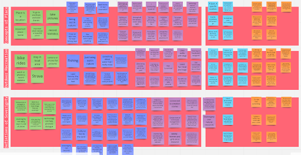

‘Illahee’ - a Chinook jargon word for place or world. To us, Illahee is an idea of an all-encompassing relationship that ties the people of a place to the land and each other. With Illahee, we hope to foster sovereignty and build reciprocity with the people who embody traditional knowledge systems to protect the environment we all inhabit.
This design research proposes the question of how a digital outdoor recreation tool could support Indigenous sovereignty through community engagement and embodied user learning. Our proposed digital tool, Illahee, is a placemaking outdoor recreation application with embodied interaction provided through guided audio-visual channels. Illahee aims to promote ecological awareness of and engagement with Indigenous history, culture, traditional knowledge systems and sovereignty efforts.
Competitive Analysis
User Testing
Conducting Interviews
Design Input
Ricardo Garza
Zoe Regan
Samantha Wanamaker
9 weeks
Miro
InVision
Figma
Wix
We looked for competitors that specialized in hiking/outdoor exercise apps, audio tour apps, and in indigenous placemaking. We chose 5 competitors: AllTrails, Strava, Anytour, VoiceMap, and Whose Land. All have Android and iOS mobile apps, while AllTrails, Strava, VoiceMap, and Whose Land have desktop sites that provide the portion of the features present in the mobile apps.
We conducted a preliminary analysis of features we would like to include in our proposed application and a secondary analysis on web and mobile navigational structure, tour/trail finding capabilities, GPS/map navigation, and overall use satisfaction of each competitor. The competitive analysis helped us understand marketplace opportunity and research precedents and also helped guide the initial design of our application.
Selections for our literature review focused on existing research that engaged with our primary research question: how can a digital outdoor recreation tool become a catalyst for sovereignty through community engagement and user learning?
Scholarly works were selected through keyword searches and reviewed for relevance and appropriate precedents.
Additionally, the seminal work by Indigenous environmental scholar and activist Winona LaDuke was reviewed and served as an important contextual resource in understanding how placemaking and naming, traditional knowledge systems and environmental stewardship connect in Indigenous sovereignty efforts.
Read the full work below
We conducted one on one semi-structured interviews with participants to collect feedback to help us better understand our problem and focus our efforts. Of note, we solicited feedback from both BIPOC (Black, Indigenous, People of Color) and non-BIPOC participants. This effort was to ensure Indigenous representation and perspectives in our design, as well as account for non-BIPOC perspectives.
By recording our observations along a set of inductively coded categories in our affinity diagram, we ultimately organized our interview findings into four themes:
We included contextual inquiry in our interviews to better gather initial design impressions from participants and better understand what future users might expect to see in our application. The contextual inquiry utilized a digital narrative which provided visual information, as well as sharing information about some of the features of the application such as placemaking, environmentalism, and the goal of fostering sovereignty.
View digital narrative HERE
We created our low fidelity wireframes based on our sketches created in Invision. The sketches allowed us to visualize our design concepts and as we worked on the low fidelity prototype in Figma we made changes and improvements. For the most part, the sketches translated well and we kept most of the design concepts intact. We felt confident in our design and the direction we were heading in.
We implemented A/B testing in order to test two different designs of the GPS navigation screen and narration screen. Prototype one utilized switching between a full screen navigation screen and full screen narration screen. Prototype two utilized a split screen where navigation and narration resided in one screen.
Overall, users liked the concept of the application and the general design. A benefit of switching to high fidelity was the ability to add images. We added images to trail locations to give the user a better sense of the trail locations and their environments.